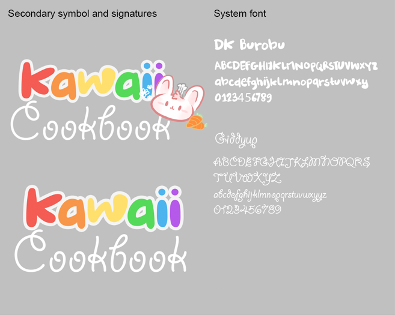
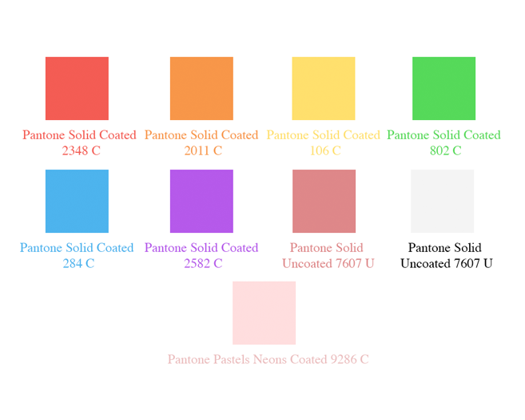
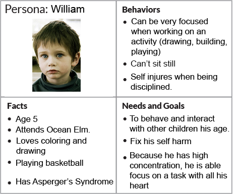
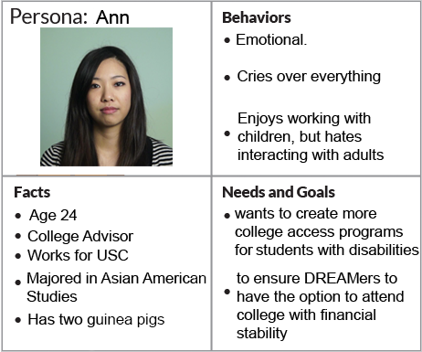
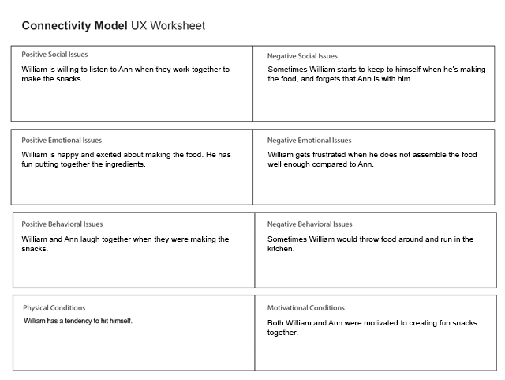
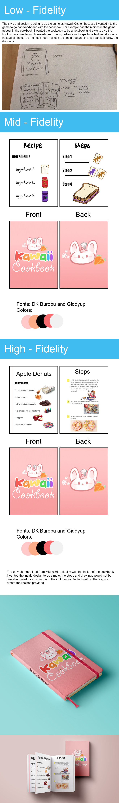

"Kawaii Kitchen: Cookbook is a cookbook that provides simple recipes for children of all ages to create. Chilren can make these recipes by themselves, with other children, or with their parents!"




The Connectivity Model allows me to observe and analyze the users' experience. By watching sample youtube videos of children with Aseperger's Syndrome cooking, I was able to observe their social, emotional, and behavioral actions. With this information, I can apply the information I collected to my cookbook.

